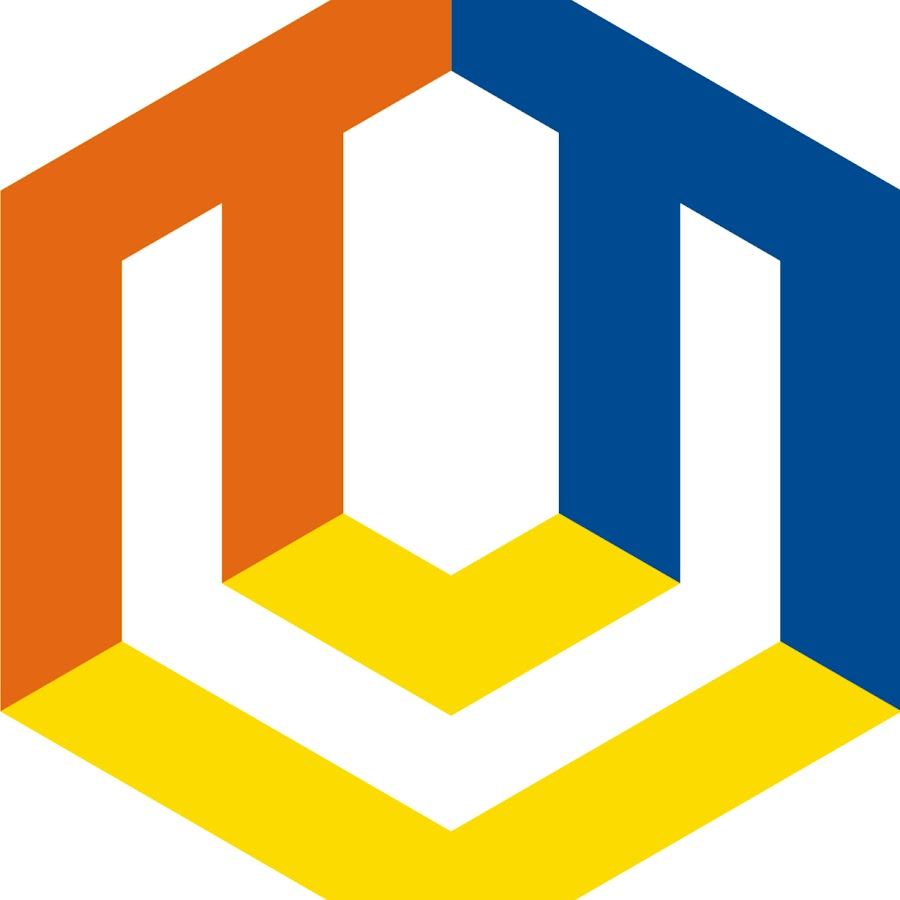
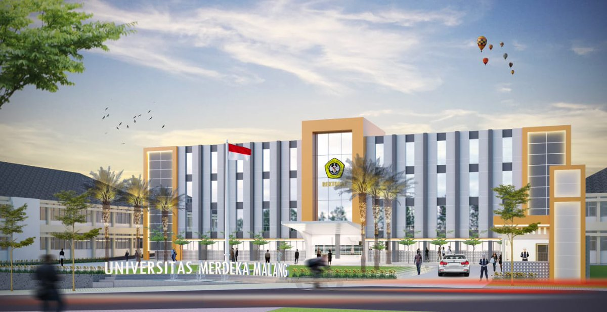

|  |
| FTI Universitas Merdeka Malang |
|
Sabrina Wegie 19083000061 3B |
|  |
| Universitas Merdeka Malang |
Universitas Merdeka Malang, disingkat Unmer Malang, adalah perguruan tinggi swasta terkemuka di Kota Malang di bawah pengelolaan Yayasan Perguruan Tinggi Merdeka Malang (YPTM) yang saat ini diketuai Kolonel Purn. H. Toegino Sokarno, SE, yang berdiri sejak 29 Januari 1964. Kampus ini terletak di Jl. Terusan Raya Dieng No. 62-64 Kota Malang Awal mula sebelum didirikannya Universitas Merdeka Malang, telah lahir terlebih dahulu sebuah universitas bernama Universitas Sawerigading Cabang Malang pada tahun 1957 yang merupakan bagian dari Universitas Sawerigading Makassar.Universitas Sawerigading Cabang Malang membuka 2 fakultas, yaitu: Fakultas Hukum dan Pengetahuan Masyarakat, dan Fakultas Ekonomi. Namun dalam perjalanannya, universitas ini berhenti beroperasi. Memasuki tahun 1962, ada rencana untuk membuka kembali Universitas Sawerigading Cabang Malang. Kemudian dibentuklah sebuah badan hukum berbentuk yayasan yang akan menyelenggarakan Universitas Sawerigading Malang dengan nama Yayasan Perguruan Tinggi Sawerigading yang didirikan oleh: Letkol. R. Edwin Soedardji, Soetikno, SH., dan Dharna, MA. Dengan dibentuknya yayasan ini, maka Universitas Sawerigading Malang berdiri sendiri dan tidak lagi bergantung pada Universitas Sawerigading Makassar. Pemisahan diri oleh Universitas Sawerigading Malang ini tidak dikehendaki oleh pihak Makassar. Masalah Status dan hubungan Organisatoris yang menyangkut kedua belah pihak tidak dapat diselesaikan dengan baik, sehingga pada 28 Januari 1964 Yayasan Perguruan Tinggi Sawerigading dan Universitas Sawerigading Malang dibubarkan melalui pembatalan Akta Pendirian. Pembubaran ini menimbulkan masalah baru, yaitu terlantarnya nasib para mahasiswa yang sedang menempuh studi di universitas ini. Untuk mengatasinya, tepat sehari setelah pembubaran Yayasan dan Universitas Sawerigading Malang, pada 29 Januari 1964, para Pendiri dan perintis: R. Edwin Soedardji, Soekiman Dahlan, SH., Frasnsiscus Soetrisno, Soegondo, Soetikno, SH., Dharma bergerak cepat untuk mendirikan universitas baru yang kemudian diberi nama Universitas Merdeka. Dengan adanya keputusan mendirikan universitas baru, maka segera dibentuk pula sebuah yayasan yang akan menyelenggarakan Universitas Merdeka, yaitu bernama Yayasan Perguruan Tinggi Merdeka Pusat Malang (YPTMPM) dengan Akta Pendirian Yayasan yang diresmikan pada tanggal 5 Juli 1964. Oleh karena itu, setiap tahunnya pada tanggal 5 Juli selalu diperingati sebagai Dies Natalis Universitas Merdeka Malang. Pada tahun 1972, nama YPTMPM diubah menjadi Yayasan Perguruan Tinggi Merdeka Malang (YPTM). Universitas Merdeka Malang atau yang dikenal sebagai Unmer Malang didirikan sebagai kubu pertahanan ideologi Pancasila, dan UUD tahun 1945.[4] Atas permohonan Pendiri Yayasan Perguruan Tinggi Merdeka Malang, Kolonel R. Edwin Soedardji kepada Pangkodam VIII/BRAWIJAYA, maka bertepatan dengan HUT Kodam VIII/Brawijaya yang ke XXIII tanggal 17 Desember 1968, Universitas Merdeka dinyatakan masuk (berinduk) ke dalam Slagorde KODAM VIII/Brawijaya (sekarang KODAM V/Brawijaya) yang bertindak selaku pembina utama dari Yayasan Perguruan Tinggi Merdeka Malang dan Universitas Merdeka Malang. Sedangkan untuk pelaksanaan tugas sehari-hari, Universitas Merdeka Malang berada di bawah Pembina harian Komando Resort Militer 083/Bhaladhika Jaya, dalam hal ini Komandan Korem 083/Bhaladika Jaya adalah Ex-officio Pembina Harian Universitas Merdeka Malang. |